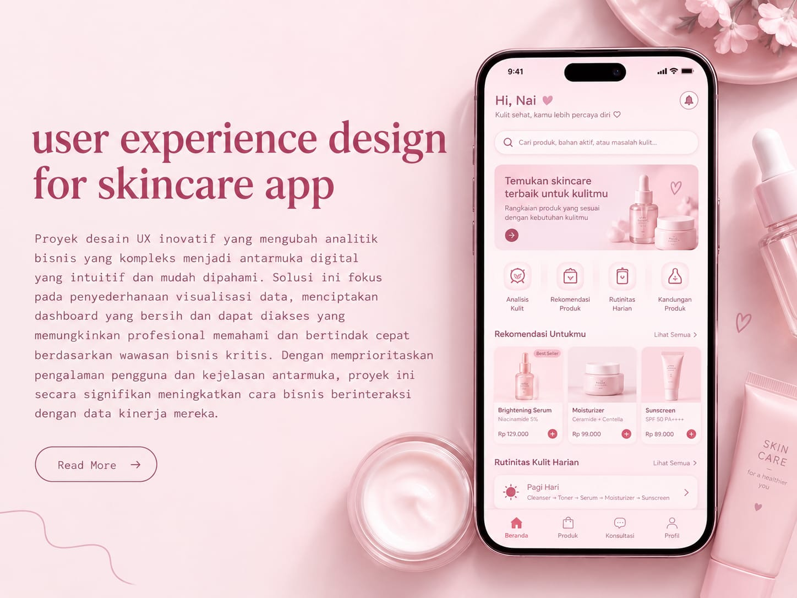

Merancang pengalaman pengguna untuk aplikasi skincare yang membantu konsumen mengenal produk perawatan kulit sesuai kebutuhan mereka. Tujuan utamanya adalah menciptakan tampilan aplikasi yang menarik, mudah digunakan, dan informatif, sehingga pengguna dapat menemukan produk skincare, mengetahui manfaatnya, serta memahami rutinitas perawatan kulit sehari-hari.
Proses penelitian untuk memahami kebutuhan pengguna skincare meliputi:
Pendekatan desain aplikasi skincare yang berfokus pada:
Hasil utama dari proyek desain UX: